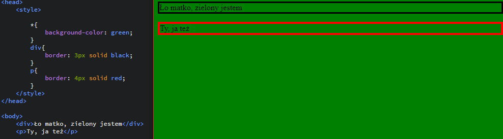
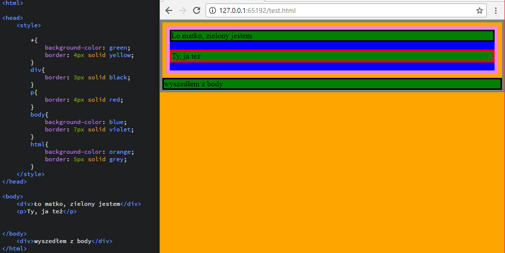
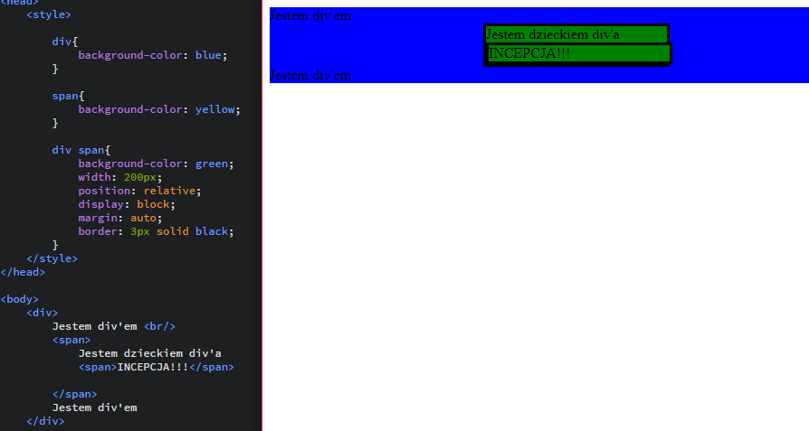
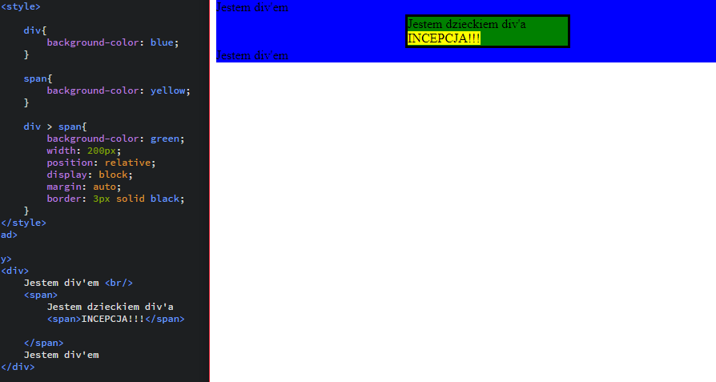
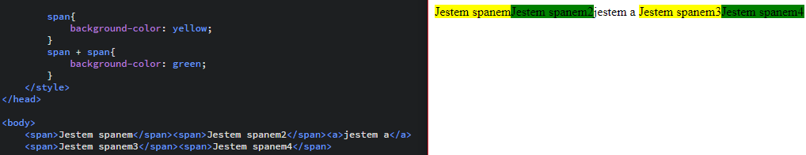
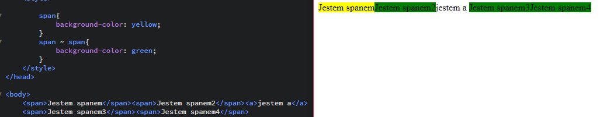

WARSZTATY WEBOWE Mikołaj Szumigalski
Powrót
Zajęcia 7
Link do pobrania prezentacji z zajęć nr 7: Prezentacja 7
Selektory CSS
Na pierwszych zajęciach z CSS'a dowiedzieliśmy się już czym są selektory jednak poznaliśmy tylko kilka ich możliwości. Wiemy, że selektorem może być nazwa znacznika, elentualnie atrybut class i id. Jednak selektorów jest więcej i mają wiele ciekawych możliwości.
1. Selektory elementów
Należą do nich oczywiście selektory znaczników czyli p, a h1 itd. Warto też wspomnieć o selektorze *{}, który jest selektorem uniwersalnym. Style w takim selektorze będą wyświetlane we wszystkich elementach strony.
{kind=link}
Poniżej mamy ciekawy przykład ostylowania takich elementów jak body czy nawet html
{kind=link}
Zauważmy jak małą częśc naszego dokumentu tak naprawdę stanowi body! Zasięg tego elementu kończy się tam gdzie kończą się pozostałe elementy. Dużo większy zasięg ma znacznik html, który choć obramował tylko treść to jednak kolor tła jest ustawiony na całej witrynie. Jeśli usuniemy stylowanie znacznika html co strona nie pokryje się kolorem body, tylko kolorem selektora *
1.1 Dziedziczenie elementów
Ufam, że większość z Was miała już dziedziczenie np. klas na przedmiotach informatycznych. Dla przypomnienia jednak dziedziczenie polega na tym, że elementy, które znajdują się wewnątrz innego elementu przyjmują automatycznie jego cechy. To niezwykle istotne podczas ich stylowania. Załóżmy, że mamy div'a a wewnątrz niego inne elementy, którym chcemy nadać style
1.1.1 Potomkowie
{kind=link}
Jeśli przy selektorze dopiszemy nazwę innego to wszyscy potomkowie tego elementu odziedziczą te cechy. Zarówno dzieci, wnuki, prawnuki...
1.1.2 Dzieci
{kind=link}
Przykład niemal identyczny jednak zamiast div span przy stylach mamy zapis div > span co oznacza, że styl zostanie przypisany jedynie dzieciom elementu div. To ważne aby rozumieć różnicę między dzieckiem elementu, a jego potomkiem
1.1.3 Bracia
{kind=link}
Jeżeli między dwoma selektorami postawimy znak + to będzie oznaczało, że style otrzymuje "ten drugi", czyli po prawej brat.
{kind=link}
Bardziej "roszczeniowym" sposobem jest zamiania znaku + na ~. Oznacza to, że nie tylko brat po prawej będzie ostylowany, a wszyscy bracia po prawej otrzymają styl (nawet jeśli rozdziela je inny element!)
2. Selektory atrybutów
Powiem uczciwie, że to rozwiązanie może być mało intuicyjne i rzadko stosowane na początku niemniej warto wiedzieć, że tak można. Do tej pory stosowaliśmy selektory dla dwóch atrybutów - id i class. Można to zrobić także dla innych stosując notacje z poniższej tabelki:
| Selektor | Opis | Przykład użycia |
|---|---|---|
| Z[atr] | Ostylowanie dla znaczników Z z atrybutem atr | link do przykładu |
| Z[atr="w"] | Ostylowanie dla znaczników Z z atrybutem atr, którego wartość wynosi dokładnie w | |
| Z[atr~="w"] | Ostylowanie dla znaczników Z z atrybutem atr, którego jedna z wartości wynosi dokładnie w | |
| Z[atr|="w1"] | Ostylowanie dla znaczników Z z atrybutem atr, wartości rozpoczynają się od w | |
| Z[atr^="w"] | ||
| Z[atr$="w"] | ||
| Z[atr*="w"] |
{kind=link}